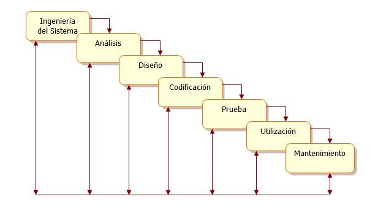
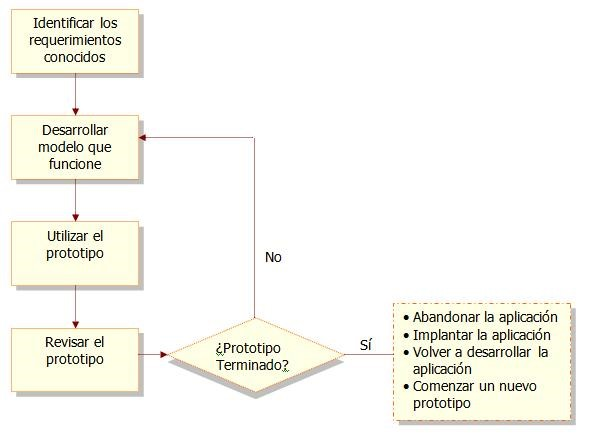
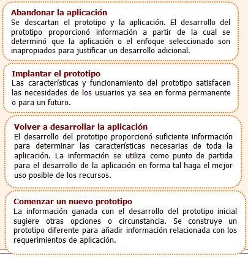
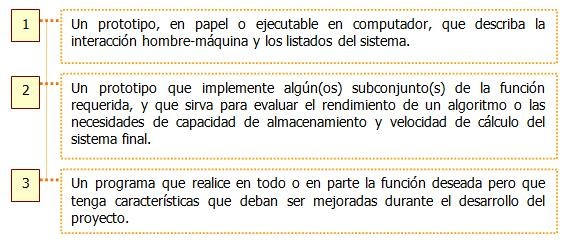
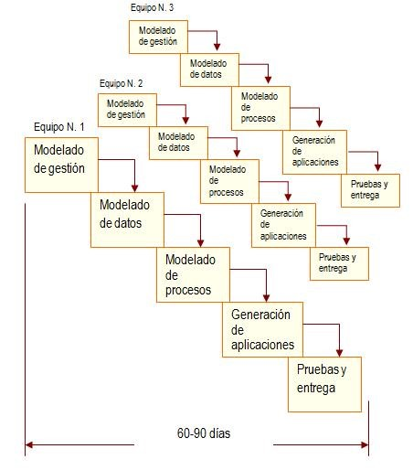
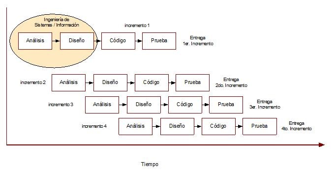
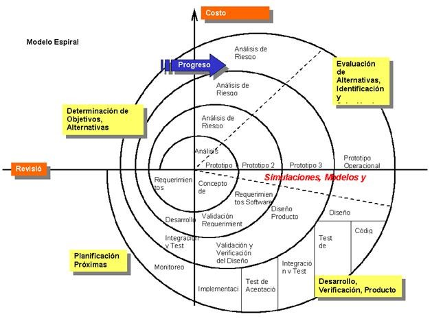
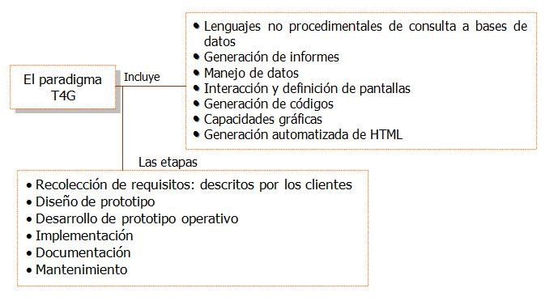

Capítulo 3. Modelos de Proceso de Software
Es importante incorporar estrategias de desarrollo que acompañe al proceso, métodos y a las herramientas.
Una estrategia a menudo se llama modelo de proceso o paradigma de ingeniería del software. Se selecciona un modelo de proceso para la ingeniería del software según la naturaleza del proyecto y de la aplicación, los métodos y las herramientas a utilizarse, y los controles y entregas que se requieren.
Sommerville [1] define modelo de proceso de software como "Una representación simplificada de un proceso de software, representada desde una perspectiva específica. Por su naturaleza los modelos son simplificados, por lo tanto, un modelo de procesos del software es una abstracción de un proceso real."
Los modelos genéricos no son descripciones definitivas de procesos de software; sin embargo, son abstracciones útiles que pueden ser utilizadas para explicar diferentes enfoques del desarrollo de software.
[1] Sommerville, I., Ingeniería de Software, Pearson Educación, 2002.
Codificar y Corregir (Code-and-Fix)
Este es el modelo básico utilizado en los inicios del desarrollo de software. Contiene dos pasos:
•Escribir código.
•Corregir problemas en el código.
Se trata de primero implementar algo de código y luego pensar acerca de requisitos, diseño, validación, y mantenimiento.
Este modelo tiene tres problemas principales:
•Después de un número de correcciones, el código puede tener una muy mala estructura, hace que los arreglos sean muy costosos.
•Frecuentemente, aún el software bien diseñado, no se ajusta a las necesidades del usuario, por lo que es rechazado o su reconstrucción es muy cara.
•El código es difícil de reparar por su pobre preparación para probar y modificar.
El Modelo Lineal Secuencial
Llamado algunas veces "ciclo de vida básico" o "modelo en cascada", el modelo lineal secuencial sugiere un enfoque sistemático, secuencial, para el desarrollo del software que comienza en un nivel de sistemas y progresa con el análisis, diseño, codificación, pruebas y mantenimiento.
Es un ciclo de vida en sentido amplio, que incluye no sólo las etapas de ingeniería sino toda la vida del producto: las pruebas, el uso (la vida útil del software) y el mantenimiento.
Ingeniería del Sistema: Análisis de las características y el comportamiento del sistema del cual el software va a formar parte.
Para un sistema nuevo: Se debe analizar cuáles son los requisitos funciones del sistema, y luego asignar un subconjunto de estos requisitos y funciones al software.
Para un sistema ya existente: se debe analizar el funcionamiento de la organización y sus operaciones y se asigna al software aquellas funciones que se van a automatizar.
Está formado por diagramas y por descripciones en lenguaje natural.
Análisis: Se debe comprender cuáles son los datos que se van a manejar, cuál va a ser la función que tiene que cumplir el software, cuáles son las interfaces requeridas y cuál es el rendimiento y otros requisitos no funcionales que se esperan lograr.
Los requisitos, tanto del sistema como del software deben documentarse y revisarse con el cliente. Como resultado de la fase de análisis, se obtiene la especificación de requisitos del software.
También está formado por diagramas y descripciones en lenguaje natural.
Diseño: El diseño se aplica a cuatro características distintas del software: la estructura de los datos, la arquitectura de las aplicaciones, la estructura interna de los programas y las interfaces.
El diseño es el proceso que traduce los requisitos en una representación del software de forma que pueda conocerse la arquitectura, funcionalidad e incluso la calidad del mismo antes de comenzar la codificación.
En el diseño, los requisitos del software se traducen a una serie de diagramas que representan la estructura del sistema software, de sus datos, de sus programas y de sus interfaces.
Codificación: Consiste en la traducción del diseño a un formato que sea comprensible para la máquina. Si el diseño es lo suficientemente detallado, la codificación es relativamente sencilla, y puede hacerse de forma automática, usando generadores de código.
Se traducen los diagramas de diseño a un lenguaje fuente, que luego se traduce - se compila - para obtener un programa ejecutable.
Prueba: El objetivo es comprobar que no se hayan producido errores en alguna de las fases anteriores, especialmente en la codificación. Se deben probar todas las sentencias, y todos los módulos que forman parte del sistema.
Utilización: El software se entrega al cliente y comienza la vida útil del mismo.
Mantenimiento: El software sufrirá cambios a lo largo de su vida útil. Estos cambios pueden ser debidos a tres causas:
•Que, durante la utilización, el cliente detecte errores en el software: los errores latentes.
•Que se produzcan cambios en alguno de los componentes del sistema.
•Que el cliente requiera modificaciones funcionales no contempladas en el proyecto.
El Modelo de Construcción de Prototipos
La idea detrás de este modelo es el desarrollo de una implantación del sistema inicial, exponerla a los comentarios del usuario, refinarla en N versiones hasta que se desarrolle el sistema adecuado.
Una ventaja de este modelo es que se obtiene una rápida realimentación del usuario, ya que las actividades de especificación, desarrollo y pruebas se ejecutan en cada iteración.
Identificar los requerimientos conocidos: Los analistas y los usuarios trabajan juntos para identificar los requerimientos conocidos que tienen que satisfacerse. Se debe: determinar los fines del sistema y el alcance de su capacidad.
Desarrollar modelo que funcione Los desarrolladores explican a los usuarios:
• El método
• Las actividades a realizar
• La secuencia en que se llevará a cabo
• La responsabilidad de cada participante
El proceso de construcción del prototipo se debe iniciar con el desarrollo de un plan general que permita conocer el proceso de desarrollo.
Es importante definir un cronograma para el inicio y fin de la primera iteración.
El desarrollador estima los costos asociados con el desarrollo del prototipo.
En el desarrollo del prototipo se preparan los siguientes componentes:
• El lenguaje de diálogo o conversación entre el usuario y el sistema
• Pantallas y formatos para la entrada de datos
• Módulos esenciales de procesamiento
• Salida del sistema
En esta fase no se prepara la documentación ni las especificaciones de salida o de diseño del software.
Utilizar el prototipo:
La responsabilidad de trabajar con el prototipo y evaluar sus características y operación es del usuario.
La experiencia con el sistema bajo condiciones reales permite determinar los cambios o mejoras o eliminar características innecesarias.
Revisar el prototipo:
Se realiza la evaluación y con la información obtenida se levantan las características que debe llevar la siguiente versión del prototipo.
La evaluación permite profundizar los rasgos de los usuarios y los de la organización que tienen influencia sobre la aplicación y en su implementación.
Los cambios en el prototipo son planificados con los usuarios antes de llevarlos a cabo por el analista.
¿Prototipo terminado?
Los pasos anteriores se repiten varias veces (4 o 6 iteraciones) cuando los usuarios y desarrolladores están de acuerdo en que el sistema ha evolucionado lo suficiente e incluye todas las características necesarias.
Cuando el prototipo está terminado, el paso que sigue a continuación es tomar la decisión sobre cómo proceder, para lo cual existen cuatro opciones:
Un prototipo puede tener alguna de las tres formas siguientes:
El Modelo DRA (Desarrollo Rápido de Aplicaciones)
Es un modelo de proceso de desarrollo del software que enfatiza en un ciclo de desarrollo corto.
El proceso DRA permite al equipo de desarrollo crear un "sistema completamente funcional" dentro de periodos cortos de tiempo (de 60 a 90 días). El enfoque DRA comprende las siguientes fases:
Modelado de gestión: El flujo de información entre las funciones de gestión se modela de forma que responda a las siguientes preguntas: ¿Qué información conduce al proceso de gestión? ¿Qué información se genera? ¿Quién la genera? ¿A dónde va la información? ¿Quién la procesa?
Modelado de datos: Conjunto de objetos de datos necesarios para apoyar la empresa. Se definen las características (atributos) de cada uno de los objetos y las relaciones entre estos objetos.
Modelado del proceso: Los objetos de datos definidos en la fase de modelado de datos quedan transformados para lograr el flujo de información necesario para implementar una función de gestión. Las descripciones del proceso se crean para añadir, modificar, suprimir o recuperar un objeto de datos.
Generación de aplicaciones: El DRA asume la utilización de técnicas de cuarta generación. En lugar de crear software con lenguajes de programación de tercera generación, el proceso DRA trabaja para volver a utilizar componentes de programas ya existentes o crear componentes reutilizables.
Pruebas y Entrega: Como el proceso DRA enfatiza la reutilización, ya se han comprobado muchos de los componentes de los programas. Esto reduce tiempo de pruebas. Sin embargo, se deben probar todos los componentes nuevos y se deben ejercitar todas las interfaces a fondo.
Modelos de Procesos Evolutivos de Software
Dentro de los modelos de procesos evolutivos, encontramos: El modelo Incremental y El Modelo en Espiral
El Modelo Incremental
Es una combinación del Modelo de Cascada y Modelo Por Prototipos.
Reduce el rehacer trabajo durante el proceso de desarrollo y da oportunidad para retrasar las decisiones hasta tener experiencia en el sistema.
Durante el desarrollo de cada incremento se puede utilizar el modelo de cascada o prototipo, dependiendo del conocimiento que se tenga sobre los requisitos a implementar. Si se tiene un buen conocimiento, se puede optar por cascada, si es dudoso, prototipo.
El modelo incremental se centra en la entrega de un producto operacional con cada incremento.
Los primeros incrementos son versiones “incompletas” del producto final, pero proporcionan al usuario la funcionalidad necesaria para su evaluación.
El modelo espiral
El ciclo de desarrollo se representa como una espiral, en lugar de una serie de actividades sucesivas con retrospectiva de una actividad a otra.
Cada ciclo de desarrollo se divide en cuatro fases:
1. Definición de objetivos: Se definen los objetivos. Se definen las restricciones del proceso y del producto. Se realiza un diseño detallado del plan administrativo. Se identifican los riesgos y se elaboran estrategias alternativas dependiendo de estos.
2. Evaluación y reducción de riesgos: Se realiza un análisis detallado de cada riesgo identificado. Pueden desarrollarse prototipos para disminuir el riesgo de requisitos dudosos. Se llevan a cabo los pasos para reducir los riesgos.
3. Desarrollo y validación: Se escoge el modelo de desarrollo después de la evaluación del riesgo. El modelo que se utilizará (cascada, sistemas formales, evolutivo, etc.) depende del riesgo identificado para esa fase.
4. Planificación: Se determina si continuar con otro ciclo. Se planea la siguiente fase del proyecto.
Este modelo a diferencia de los otros, toma en consideración explícitamente el riesgo, esta es una actividad importante en la administración del proyecto.
El ciclo de vida inicia con la definición de los objetivos. De acuerdo a las restricciones se determinan distintas alternativas. Se identifican los riesgos al sopesar los objetivos contra las alternativas. Se evalúan los riesgos con actividades como análisis detallado, simulación, prototipos, etc. Se desarrolla un poco el sistema. Se planifica la siguiente fase.
Actividades del modelo en espiral
Comunicación con el cliente: Se establece comunicación entre el desarrollador y el cliente.
Planificación: Se definen los recursos, el tiempo y otra información relacionadas con el proyecto.
Análisis de riesgos: Se evalúan riesgos técnicos y de gestión
Ingeniería: Se construyen una o más representaciones de la aplicación.
Construcción y acción: Construir, probar, instalar y proporcionar soporte al usuario.
Evaluación del cliente: Se obtiene la reacción del cliente. Se realiza la evaluación de las representaciones del software creadas durante la etapa de ingeniería e implementada durante la etapa de instalación.

El equipo de ingeniería del software gira alrededor de la espiral en la dirección de las agujas del reloj, comenzando por el centro.
El primer circuito de la espiral puede producir el desarrollo de una especificación de productos; los pasos siguientes en la espiral se podrían utilizar para desarrollar un prototipo y progresivamente versiones más sofisticadas del software. Cada paso por la región de planificación produce ajustes en el plan del proyecto. El costo y la planificación se ajustan con la realimentación ante la evaluación del cliente. Además, el gestor del proyecto ajusta el número planificado de iteraciones requeridas para completar el software.
Métodos Formales y Técnicas de Cuarta Generación
El modelo de Métodos Formales
Comprende un conjunto de actividades que conducen a la especificación matemática del software de computadora. Los métodos formales permiten que un ingeniero de software especifique, desarrolle y verifique un sistema basado en computadora aplicando una notación rigurosa y matemática.
Este enfoque es llamado ingeniería del software de sala limpia.
Cuando se utilizan métodos formales se descubren y corrigen ambigüedades, inconsistencias y errores.
Técnicas de Cuarta Generación
Abarca un conjunto de herramientas que facilitan al ingeniero del software la especificación de las características del software a alto nivel.
La herramienta genera automáticamente el código fuente basándose en la especificación del técnico. Cuanto mayor sea el nivel en el que se especifique el software, más rápido se puede construir el programa.
El paradigma T4G para la ingeniería del software se orienta hacia la posibilidad de especificar el software usando formas de lenguaje especializado o notaciones gráficas que describa el problema que hay que resolver en términos que los entienda el cliente.
